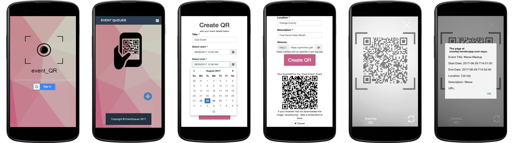
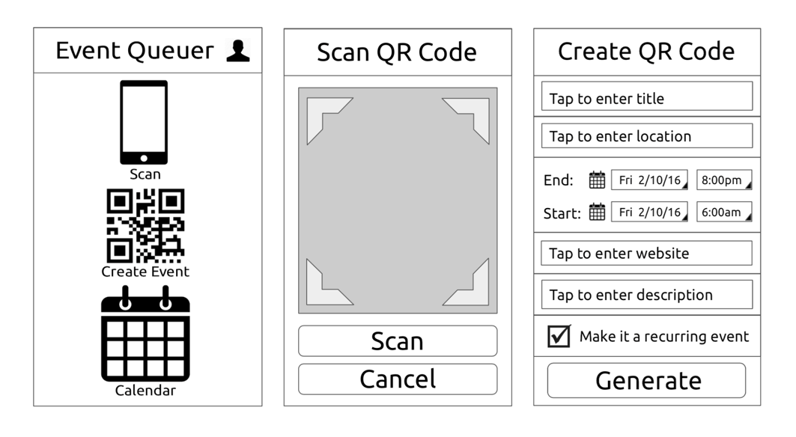
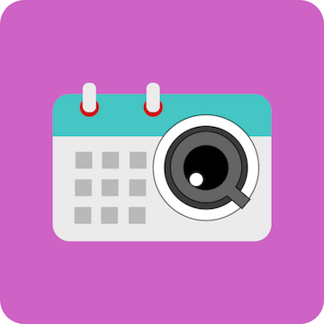

Timeline: Mar - Jun 2016
Project Type: School Project
My Role: Product Designer, Front-end Developer
Tools: Sketch, JQuery, Google Analytics & Calendar API
Skills: Interaction Design, User Research, Software Development
Looking to get connected and get out more? Plug in with EventQueuer to add events to your Google Calendar without the manual effort. Simply scan an Event QR code in our easy, in-browser app and we’ll add the details to your calendar for you. Marketing an event around campus? Create an Event QR to modernize your flyer advertisement. Bridge the gap between planning in the the physical and virtual worlds with EventQueuer.
Check out the finished app here
Full compatibility with Android devices only
This project was made through my first interaction design course at UCSD, wherein I looked into unique ways to solve fairly common user needs. I teamed up with two other undergrads and took on the full stack developer position, which focused on integrating user centered design principles with the development of the app.
My Role:
- Content Strategist: I focused on questions like what content can we offer to meet our stakeholders' needs? How many features are appropriate and what form should it take? What style or tone should it have?
- User Researcher and Designer: I was responsible for interviewing users and incorporating their feedback into our prototypes.
- Software Developer: I implemented the function which takes in data to output a QR code.
We began
the project by interviewing strangers around campus, asking what they thought could be improved. The most
frequent user need was that students struggled with time management
due to heavy course loads, social events and professional circles. There was a strong agreement in that
it was hard to keep track of long lists of events that one
may want to attend, since there are so many different platforms.
Although events
are sometimes listed on websites like FaceBook and EventBrite, flyers and bulletin boards are very
common in school
campuses; however, adding and scheduling reminders for these events is a tedious process.
Students
needed a way to keep track of these events in an integrated fashion
to be more organized and better connect with the community as a whole.
Storyboards
With the initial user feedback in mind, we created a competitive analysis on existing time management and calendar apps. We realized that many existing solutions still require the user to input a lot of organization work. It was also unnecessarily complicated for users to share events with their friends privately. We took different elements from various apps and incorporated it onto our inspiration board to ideate several possible solutions. We formed our top two ideas into paper prototypes.
Prototype 1: a glorified reminder app. We took inspiration from the stock reminder app on iOS and incorporated a photographic focused interface so that users can more easily identify upcoming events, rather than scrolling through a bulleted list. We also incorporated a sharing feature, which enables users to privately and efficiently make plans with others.
Prototype by Jenny
Prototype 2:
Syncing QR Code events to the calendar. Our
interviews revealed that many users were dissuaded from using calendar apps to organize their schedule
because they had to manually organize it often. We focused on
this pain point by which events were to be recorded.
We thought that if one person could set up the event and allow everyone else to easily sync or
scan the details onto their calendar, then it’d essentially remove the tedious process for many. We chose
QR codes to store event details
because it could hold large amounts of textual data within a single object. We also incorporated
a social aspect to the app to encouraged users to search for events near them and easily sync the details
onto their calendar on one platform.
Prototype by me
We tested both prototypes with several other classmates by replicating features through the Wizard of Oz technique. The users generally preferred the QR scanner idea because it was a faster way to record events into their calendar. They felt that the picture reminder app was still tedious because of the need to manually input the event details every time.
The testers also provided feedback with a list of improvements and features to implement:
- Since we have two user groups (event host, event goer), the current navigation interface can be confusing. We need to more distinctly separate the features.
- Remove the search and the near me features for finding events because there are existing services that do this comprehensively.
- In the scan successful page, give the user the option to scan again (back) or go home.
- Implement an error message that tells the user if the scan failed.
I lead the design since my teammates were pure Computer Science majors. Keeping the testing feedback in mind, I decided to simplify the functionality. I focused on creating an intuitive navigation framework and separating the features for our two main user groups so that beginners would more easily figure out how to complete each function.
Wireframes
Skeleton
Everyone on the team had a background in computer science so we split the core implementation evenly into thirds. I was responsible for generating the QR code, wherein I had to format input strings into a QR code to be scanned. After the first week, we found that this worked horribly. We had countless merge conflicts because most of the code was delegated on the home page, with the app functions activated through popups. The css and javascript from our different API libraries also interfered with each other. After a long discussion, we decided to scrap all of the development and start anew, but with group programming for the core app functions.
Devplan
Unfortunately, we encountered
a major roadblock. Only the front facing camera
worked for iOS devices. We found that Apple has restrictions on modifying the recording function through
the rear camera on Safari and other 3rd party browsers.
Thus there was no way to implement a rear QR scanner within the browser at the time.
We did manage to get the rear scanner to work for Android devices, but only within the Firefox
and default browser. This was still an extremely fatal flaw since it’s very difficult to scan a QR code
with a front facing camera. These
prerequisites would also most likely dissuade many potential users from using the app; however, we had no
choice but to continue since we only had a few more weeks of class left. Starting from scratch with a new
idea was not an option.
The lesson to be learned is that, as a designer and developer, I must thoroughly research the
implementation details during the ideation phase to see if it’s actually possible before development.
Although my teammates researched
implementation details as I was wire-framing, it is not an excuse for me to skip this step. Researching
is apart of a designer’s role and I should have taken it into my own hands especially when I have the
capability to do so.
Build 1
The next step was to test the practical usability of the app. Each team member was responsible for 12 user interviews. I composed the user testing plan (found here), which focused on 3 design choices of interest:
- Core functionality: Can a user smoothly and successfully create/scan an event?
- Interaction flow: Can a user properly navigate the interface without confusions or interruptions?
- Practicality: Would a user actually use this app as opposed to manually writing down events?
Usability Tests
Findings:
- Users confused the phone icon, which represents scanning, with the QR code icon, which represents creating an event.
- Users had a long pause and said that they were confused by the “capture” and “save” buttons.
- Some users felt that the view calendar feature was unnecessary, since they would use their own calendar app.
At this stage of the project,
my team was uncertain on whether or not the
camera should automatically turn on when the user clicks on the icon from the home screen. For privacy
concerns, some users might not like it when their camera
automatically opens, thus we gave the user the option to manually start and stop it. We saw that this
may actually be a smaller population,
whereas most users may prefer to have ease of use over privacy.
I set up an A/B test to see if there was a significant improvement
in task completion time with the automatic camera. One page had the camera
open automatically when clicking
the “scan” function, whereas the other required the user to perform an extra click to start the camera.
At the end of each test we asked if the user would preferred an automatic or manual camera.
Google Analytics A/B Testing
I conducted a one tailed, two
group t-test since we wanted to look
at the differences between two groups on some variable of interest,
specifically the speed it took for users to complete scanning a QR code. Long story short, there was a
significant improvement in function execution time for the users who were assigned the automatic camera.
In the post test interviews, a majority of the users also preferred that the camera start right
away. When asked why, most said that it was a familiar and standardized functionality that many popular
apps like Snapchat and Instagram
follow.
Observations and Calculations
With the feedback in mind, we iterated by:
- Making the create vs scan function more distinct
- Removing the calendar
- Implementing an automatic camera
- Making the camera interface fullscreen
- Adding a scan successful popup
- Stylizing the background
Icon POC
Check out the finished app here
Full compatibility with Android devices only
We finished the course by pitching the project in front of an audience of 300-400 people. It was a great experience and other teams also had brilliantly executed ideas.
Pitch Slide
Presentation Poster
In conclusion, I learned that I have to thoroughly research possible limitations in the design before development. Because I’m both a designer and a developer, I must be be aware of the technical limitations behind my designs and ideas. I also learned that it is very difficult to coordinate the implementation of different APIs when everyone is given a separate role to do alone. The initial research and implementation of core functions of an app should be done together so that there is less confusion for everyone.

D4SD Hackathon
I competed in a city wide design competition to improve transportation in San Diego during Fall 2017.

Workday
Redesigning the global conclusion interface and mobile animations.